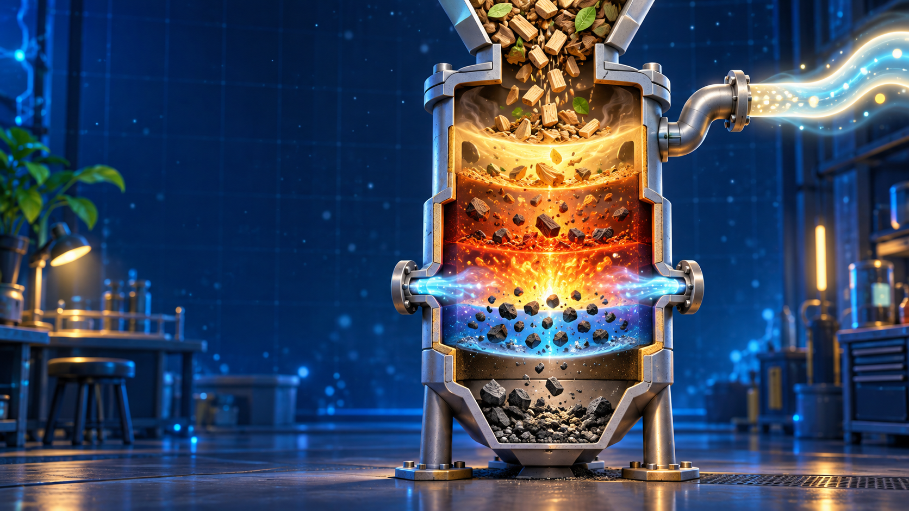
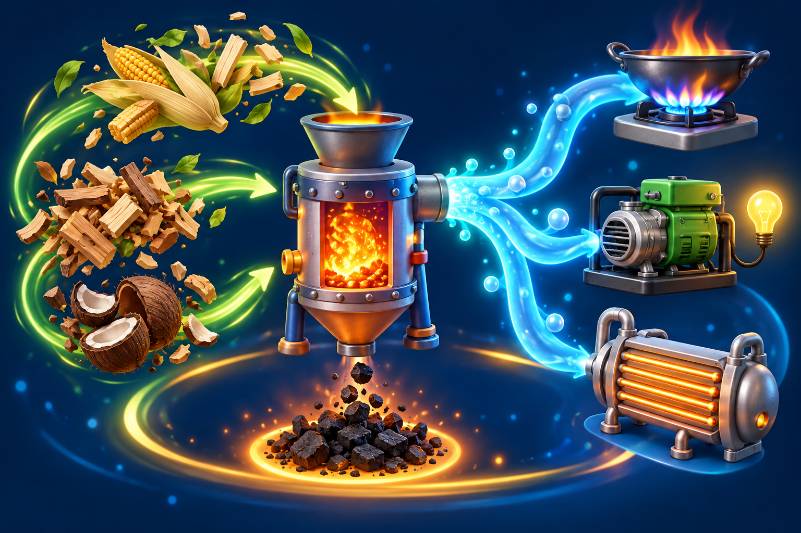

Secado
El calor expulsa la humedad. Primero sale vapor de agua; todavía no se forma el gas combustible.
100°
La gasificación convierte materiales sólidos —como madera, cáscaras o carbón— en un gas combustible usando mucho calor y una cantidad controlada de oxígeno.
En un gasificador real, estas zonas pueden superponerse. Separarlas nos ayuda a seguir la historia de cada partícula.
El calor expulsa la humedad. Primero sale vapor de agua; todavía no se forma el gas combustible.
100°Sin suficiente oxígeno, el material se descompone en vapores, gases y carbón sólido.
400°Una pequeña fracción reacciona con oxígeno. Ese “mini incendio” aporta el calor para todo el proceso.
1000°El CO₂, el vapor y el carbón caliente reaccionan para formar CO, H₂ y algo de CH₄.
800°Mueve la temperatura y cambia el suministro de oxígeno. El simulador muestra la tendencia general, no el diseño de una planta real.
Todo depende del oxígeno. Con abundancia, domina la combustión; con una dosis limitada, parte de la energía queda guardada en moléculas gaseosas.

Solo una condición convierte la combustión completa en gasificación.
¿Qué característica define mejor la gasificación?